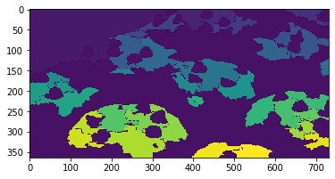
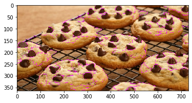
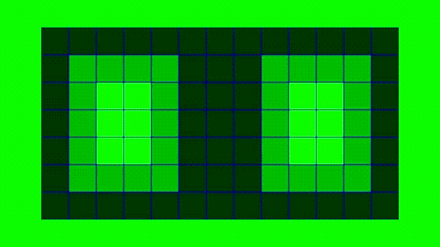
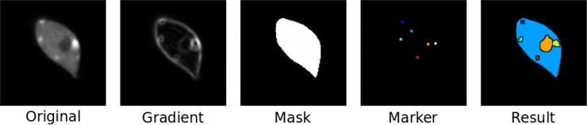

Algoritmo de WaterShed
Contexto
O problema de segmentação de imagens pode ser interpretado como a divisão de uma imagem em múltiplas regiões ou objetos, com o objetivo de simplificar a representação de uma imagem para facilitar a sua análise. A segmentação tem seu uso mais comum para localizar objetos e formas em imagens. O resultado dessa segmentação é um conjunto de regiões, objetos ou contornos retirados da imagem. Cada uma das regiões possuem alguma característica computacional em comum, como cor, textura etc. Existem diversos algoritmos que realizam a segmentação de imagens em geral para encontrar diferentes regiões e o algoritmo de WaterShed é um deles.
Segmentação
A segmentação nada mais é que uma maneira de identificar as diferentes regiões de uma imagem e delimitar o contorno delas. A segmentação de imagens é utilizada para localizar objetos e/ou formas. O resultado da segmentação é um conjunto de regiões separadas por contornos.
Exercício 1
Vamos praticar nossa metodologia para aplicar a segmentação de imagem.
Temos embaixo uma imagem com algumas moedas.
Entrem no link e "segmentem" a imagem, lembrem-se dos contornos.
Agora apliquem a mesma metologia para segmentar uma imagem de cookies neste link.
continuar ou terminar
Exercício 2
Há alguma diferença na quantidade de segmentos ao aplicar a metodologia para as duas imagens?
continuar ou terminar
Sim, a segunda imagem possui muito mais regiões. Depois da segmentação de uma imagem que tem diferentes regiões ou regiões grandes com tons diferentes podemos obter como resultado imagens supersegmentadas. Podemos verificar que a imagem dos cookies é uma imagem que pode acabar ficando supersegmentada, prejudicando a ánalise.


O algoritmo
O algoritmo recebe como entrada uma imagem em greyscale, ou seja, em tons de cinza. Ele interpreta essa imagem como um mapa topográfico em que os píxeis vizinhos de mesmo tom são como curvas de nível.
Os níveis de menor valor, ou seja, os pixeis mais escuros, começam a ser preenchidos como uma "piscina".
Quando as "piscinas" se encontram é delimitada uma barreira na imagem. Essa barreira se extende ao longo de vários pixeís vizinhos fazendo o contorno de "territórios" em que a cor é diferente da cor adjacente.

Como codar
O algoritimo é dividido em três passos fundamentais:
Todos os pixeis de valores mínimos de uma imagem grayscale, as "piscinas", são marcados uma key única e inserdos em uma fila de prioridade. A interface dos pixeis pode ser representada dessa forma:
interface Pixel { value: number //cor do pixel key: string | null //chave que representa a qual "piscina" o pixel pertence. É inicializada como null }Logo após, é retirado um elemento desta fila e, para todos seus pixeis adjacentes com key == null é colocada a key do elemento que foi retirado. Esses pixeis adjacentes são adicionados na fila e o processo se repete, como uma busca em largura.
Quando um pixel com a key x tem um pixel adjecente com key y, a chave value do pixel com key y é trocada para representar uma barreira.
Complexidade
Para o algoritmo identificar onde as "piscinas" se encontraram é realizada uma iteração por todos os píxeis da imagem, ou seja, uma busca em largura. Dessa forma o watershed tem característica linear e possui complexidade O(n).
A supersegmentação
No exemplo dos cookies, o algoritimo de watershed acabou poluindo a análise, gerando várias regiões indesejadas. Isso ocorreu, visto que a entrada consiste de diferentes valores de pixel, formando várias "piscinas" e, consequentemente, várias regiões. Isso pode ser solucioando colocando manualmente os valores dos mínimos locais.
Exercício 3
Reduzindo o número de piscinas solucionaria esse problema? Se sim, como isso poderia ser feito?
continuar ou terminar
Em uma implementação do algoritmo a utilização de marcadores iniciais pode fazer a diferença e diminuir os pontos pelos quais o algoritmo deve iterar, ou seja, diminuindo o número de "piscinas" iniciais, evitando a supersegmentação.
É possível adicionar marcadores com uma segunda imagem de entrada com as mesmas dimensões da imagem a ser segmentada contendo pontos/marcadores onde são localizados os centros das áreas conectadas. Esses pontos geralmente correspondem aos mínimos locais da imagem de entrada.

Implementação
Agora vamos abrir o jupyter notebook que está na raiz deste repositório.